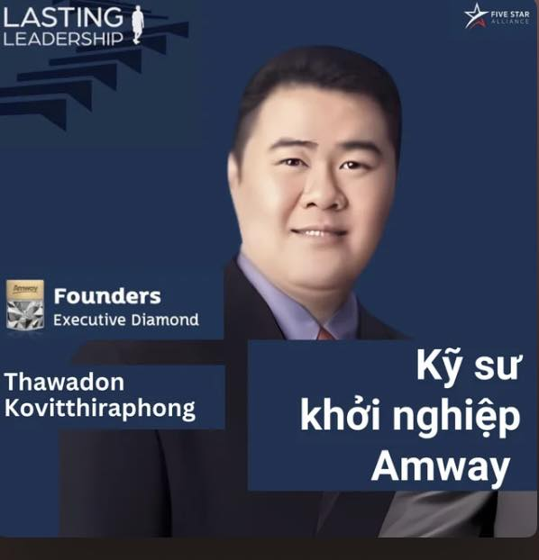

Kỹ sư làm Amway
Ông là đại diện cho kiểu người phải học thật giỏi để thành công. Ông tốt nghiệp trường đại học danh tiếng và được bạn rủ đi đánh tennis, rồi kết nối với nhóm bạn làm Amway.
Ông thắc mắc tại sao một người bạn học rất giỏi lại chọn Amway. Sự tò mò khiến ông lắng nghe thật kỹ, và ngay hôm đó đăng ký làm nhà phân phối.
Ông chia sẻ về góc nhìn tài chính:
- Cuộc đời ai cũng có chi phí và mọi người phải đi làm để trả cho chi phí đó.
- Muốn sống tốt thì thu nhập phải lớn hơn chi phí.
- Nếu có nguồn thu lâu dài mà không cần lo lắng, ta sẽ sống tự do hơn.
Ông nhìn Amway như một mô hình kinh doanh mà khi xây xong hệ thống sẽ tạo ra thu nhập thụ động. Nhưng muốn có thu nhập thụ động thì phải xây kinh doanh trước. Và để có kết quả, khi gặp cơ hội phải dám đánh đổi.
Ông từng ước mơ đi nước ngoài du học và tự hỏi bản thân:
- “Đi nước ngoài để làm gì? Để tìm cơ hội? Thì bây giờ có rồi kìa.”
- “Muốn tốt nghiệp, học thạc sĩ? Thì làm Amway thành công đi, không cần phải làm việc, đi nước ngoài chơi cũng được.”
Ông cũng giằng xé giữa việc đi về nhà 10 phút hay lái xe 1,5 tiếng đi center. Khi tự trả lời được câu hỏi, ông trông chờ tới giờ được đi center và dặn tuyến trên yên tâm: “Tôi chắc chắn có mặt hàng tuần.”
Những điểm nhấn ông luôn nhắc tới:
- Sự thành công nằm ở chỗ lựa chọn và hạ quyết tâm thành công.
- Khi bắt đầu bằng ước mơ và niềm tin thì sẽ bắt đầu làm.
- Không có thái độ tốt thì sẽ dừng làm, dừng tin và dừng ước mơ.
- Thái độ tốt và niềm tin giúp mình làm tiếp.
- Thành công sẽ xuất hiện khi mình lựa chọn đúng, nỗ lực và ước mơ đủ mạnh.
Thành tích của ông: sau 7 tháng đạt 15%, sau 1 năm 3 tháng lên Platinum và hiện tại là Founders Executive Diamond. Khi ông lên Platinum, kinh tế xã hội khủng hoảng nhưng ông không bị ảnh hưởng. Trong 4 năm gần đây, thu nhập của ông nhận hơn 40 triệu Baht (khoảng 33 tỷ đồng).